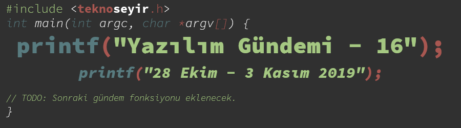
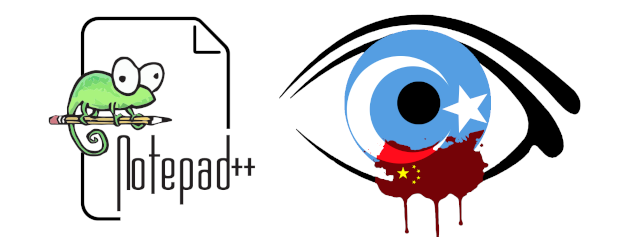
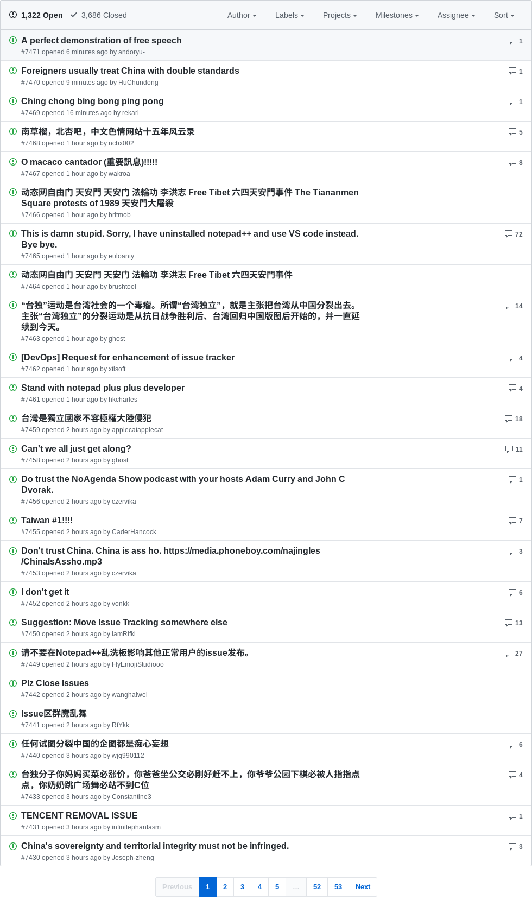
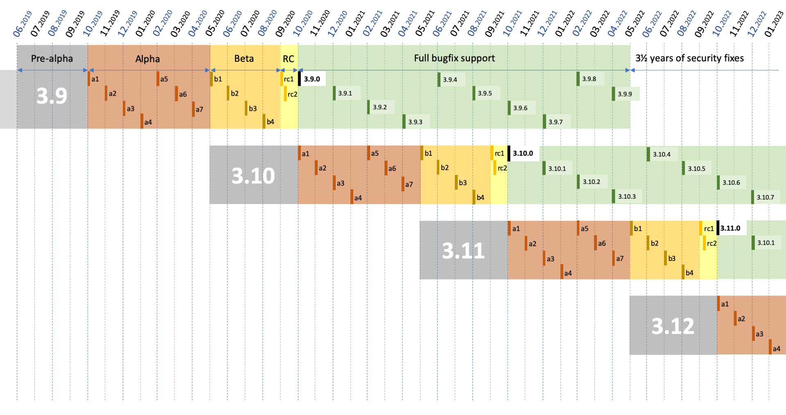
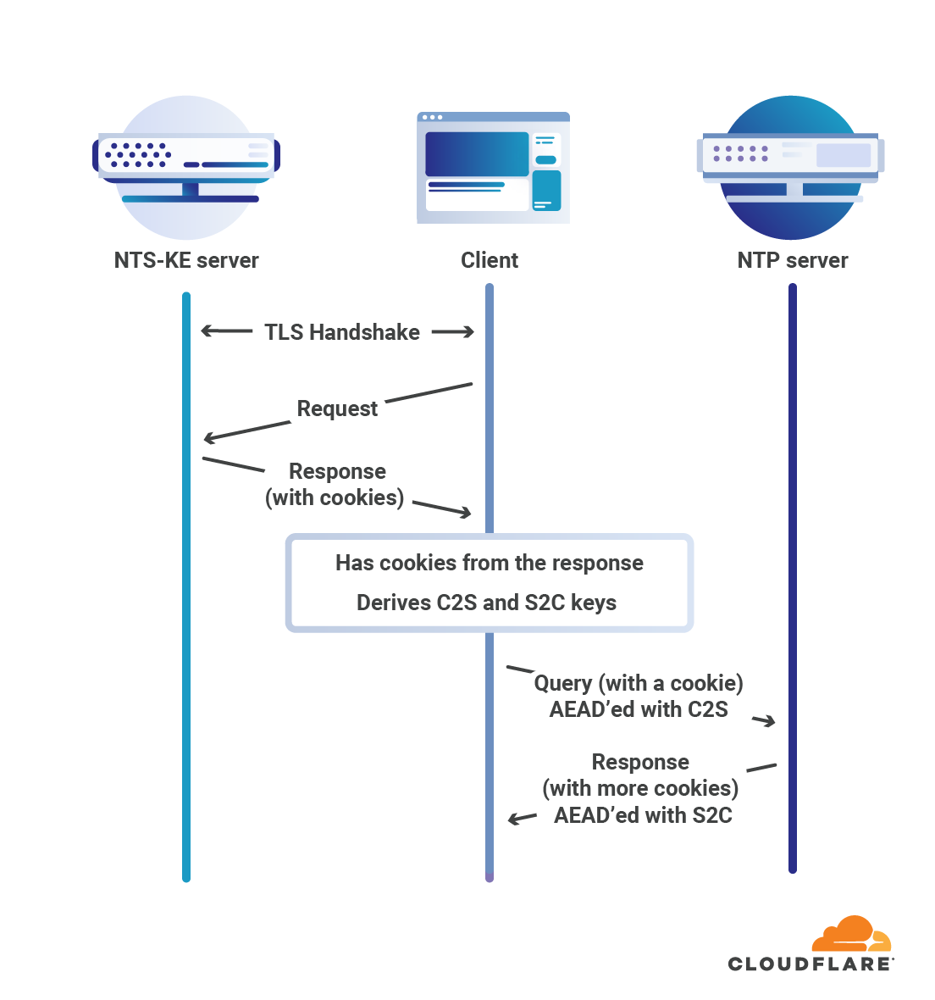

Yazılım Gündemi - 16
28 Ekim - 3 Kasım 2019
İçindekiler
- 1. Notepad++ 7.8.1 sürümünü "Free Uyghur" ismiyle çıkardı
- 2. İspanya'nın isteği üzerine GitHub protestocuların kullandığı uygulamanın deposunu kaldırdı
- 3. Android 11 sürümünde kablosuz bağlantı üzerinden ADB desteği gelebilir
- 4. Python, 3.9 sürümünden sonra yıllık sürüm döngüsüne adapte olacak
- 5. Cloudflare Rust ile yazılmış NTS implementasyonunu duyurdu: cfnts
- 6. Mozilla, klasörden eklenti yükleme seçeneğini kaldırmaya hazırlanıyor
- 7. Yaklaşan Etkinlikler
- 8. Diğer Haberler
- 9. Lisans

< Önceki Gündem | 28 Ekim - 3 Kasım 2019 | Sonraki Gündem >
1 Notepad++ 7.8.1 sürümünü "Free Uyghur" ismiyle çıkardı

Notepad++ her ne kadar doğrudan bir programlama aracı olmasa da hızlı çalışmasından dolayı Windows ortamında tercih edilebilen bir metin editörü. Geliştiricisi Don Ho, bu hafta duyurduğu 7.8.1 sürümünün ismini, Çin'de Uygur Türk'lerine uygulanan 'yeniden eğitim kampları'na dikkat çekmek için "Free Uyghur" ("Uygurlara özgürlük") koydu.
29 Ekim tarihinde yayınladığı blog yazısında Çin devletinin yaptığı insan haklarına aykırı şeylerden bahsetmekle kalmamış, oradaki insanlara nasıl yardım edilebileceği ilgili de bilgi vermiş. Fakat benim özellikle dikkat çekmek istediğim kısım yazısının son paragrafı, Türkçe'ye çevirecek olursak:
İnsanlar bana tekrardan "programlamayı ya da işi siyaset ile karıştırma" diyecekler. Bunu yapmak kesinlikle Notepad++'ın popülaritesini etkiler: Siyaset hakkında konuşmak, yazılım ve ticari şirketlerin genellikle kaçınmaya çalıştığı şeydir. Problem şudur ki: Eğer biz siyaset ile uğraşmazsak, siyaset bizimle uğraşır. İnsanlar ezildiğinde hareket etmemeyi seçebilirsiniz, ama ezilme sıramız geldiğinde, çok geç olacak ve bizim için kimse olmayacak. Harekete geçmeniz için Uygur ya da Müslüman olmanız gerekmiyor, sadece insan olmak ve bazı insanlarla empati kurabilmek yeterli.
Çok iyi çevirememiş olabilirim (yanlış çevirdiğimi düşündüğünüz yerleri yorumlar bölümünde belirtebilirsiniz) fakat vermek istediği mesajı anlamak için yeterli olduğunu düşünüyorum. "Biz siyasetle uğraşmazsak, siyaset bizimle uğraşır" sözünü ben en iyi 2016 yılında anlamıştım. Berat Albayrak'ın maili hackleyen RedHack grubu, mailleri GitHub'a yükleyince GitHub 1 gün boyun boyunca yasaklı kaldı. Görüyorsunuz, siz ne kadar siyaset ile ilgilenmemeye çalışsanız da bir şekilde geliyor buluyor sizi. İster programlama, ister bilim yapıyor olun. İşte bu yüzden "açık kaynak" yerine "özgür yazılım" hareketini destekliyorum. Don Ho'nun blog yazısındaki bu son paragrafı gerçekten çok önemli. Bunları hiç çekinmeden dile getirmesinden dolayı geliştirici arkadaşı kutlamak gerek. Böyle insanların var olduğunu bilmek dünyaya dair umutlarımı bir nebze olsun yeşertiyor. Bu konu hakkında siz ne düşünüyorsunuz? Sizce yazılım ve siyaset birbirinden tamamen ayrı konular mı yoksa sürekli olmasa da birbirlerini etkileyen şeyler mi? Yazılımcılar olarak ne kadar ilgilenmeliyiz bu konularla? Yorumlar kısmında konuşalım.

Bir nebze olsun umut yeşerten insanlardan ziyade maalesef aynı dünyada olduğumuzdan dolayı utanç duyacağımız insanlar da var. Bu blog yazısının yayınladığı saatten sonra Notepad++ projesinin GitHub sayfasının Issues bölümü birçok Çinli vatandaş tarafından spam yağmuruna tutuldu. "Çin'de öyle şeyler yapılmıyor" diyenden tut da, bayağı küfürlü mesajlar yazanlara kadar yüzlerce hatta binlerce spam issue sayfası açıldı. Ne söylenebilir ki bu insanlar için… (aslında söylenebilecek bazı şeyler var da burası yeri değil)
2 İspanya'nın isteği üzerine GitHub protestocuların kullandığı uygulamanın deposunu kaldırdı
İspanya'nın Barcelona kentinde yaklaşık bir aydır devam eden protestolar var. Bu protestoların sebebi ayrıkçı Katalan liderlerinin ve Katalonya'nın bağımsızlığını destekleyenlerin tutuklanması. Bu haberin yazılım gündemine girmesinin sebebi ise, kendilerine Tsunami Democrátic diyen aktivist bir grubun protestocuların kullanması için geliştirdiği bir mobil uygulamanın GitHub'dan, hükumet istediği doğrultusunda silinmesi. Bunu da GitHub'ın, hükumetlerden kendisine gelen kapatma isteklerini paylaştığı deposundan öğreniyoruz. Görüyoruz ki, Rusya ve Çin ülkelerinin arasına bir de İspanya eklenmiş.
Tsunami Democrátic grubunun github üzerinde barındırdığı web sitesi yayında kalmaya devam ediyor (İspanya'da engellenmiş, biz görebiliyoruz) fakat uygulamanın APK dosyasının olduğu depo, GitHub tarafından silinmiş. İlgili aktivist grup da bu sefer kendilerine başka bir yol bulmuşlar: bir telegram kanalı hazırlamışlar ve APK dosyasını oradan dağıtıyorlar.
3 Android 11 sürümünde kablosuz bağlantı üzerinden ADB desteği gelebilir
Android Debug Bridge (ADB) isminden de anlaşılacağı üzere, Android uygulama geliştirirken hata ayıklama ve diğer birçok farklı işlem için kullanabileceğiniz Android geliştiricinin takım çantasında mutlaka olması gereken bir araç. Android geliştirme ile çok az deneyimim olsa da Android Debug Bridge (ADB) aracının Android geliştiriciler için ne kadar önemli olduğunu biliyorum. Bu özellik henüz sadece USB bağlantı üzerinden kullanılabilir fakat bazı geliştiriciler hem kablo ile uğraşmamak için hem de birden fazla cihazda geliştirme yaparken kablosuz olarak da bu özelliği kullanmak istiyor. ADB aracı buna izin veriyor fakat yine ilk bağlantı için USB'yi bağlayıp sonra kablosuz olarak devam etmek ve birden fazla cihazla çalışıyorsanız da her cihaza sabit bir IP adresi vermek gerekiyor-ki router kapatıp açılınca lokal IP adresler de değişmesin. Üstelik bu yöntem hiç de güvenli değil, çünkü bağlantı TCP/IP protokolü üzerinden şifresiz bir şekilde düz metin olarak kuruluyor. Dolayısıyla güvenmediğiniz ağlarda kullanamıyorsunuz.
Bu hafta xda-developers sitesindeki bir üyenin fark etmesiyle anlaşıldı ki bir google çalışanının bu özellikle ilgili commit'ler yapmış. İlgili commit'ler şu şekilde:
Commit mesajlarından ve içeriklerinden anlayabileceğiniz üzere Google'da bu yönde bir çalışma var. Androd'in Geliştirici Ayarları kısmına "Wireless debugging" anahtarı eklenmiş ve üstelik güvenli olabilmesi için de kablosuz bağlantı kurulurken QR kod ya da 6 haneli bir kod ile eşleşme gerekli olacak gibi gözüküyor. Fakat Android geliştirici arkadaşların hemen heyecanlanmasını tavsiye etmiyorum. Çünkü değişiklikler henüz merge edilmemiş gözüküyor. xda-developers sitesindeki geliştiricilerin de Android 11'de bu özelliğin kullanıma sunulmasını umuyorlar fakat bekleyip görmek gerek. Umarım Android geliştirici arkadaşların işlerini kolaylaştıracak bu özellik yakın zamanda gelir.
4 Python, 3.9 sürümünden sonra yıllık sürüm döngüsüne adapte olacak
30 Ekim tarihinde yönetim kurulu üyesi Brett Cannon'un Python geliştiricileri e-posta grubuna gönderdiği maile göre daha önce Łukasz Langa tarafından önerilen PEP 602 - Annual Release Cycle for Python önerisi kabul edildi. İlgili önerinin sayfasında durumu henüz "Draft" (Taslak) olarak gözükse de gönderilen mailde kısa süre içinde sayfanın güncelleneceğini belirtilmiş. Daha önce de 18 aylık sürüm döngüsündeydiler.
Bu yeni döngüye göre artık herhangi bir Python 3.X.0 sürümü bu şekilde hazırlanacak:
- Python 3.X.0'ın geliştirilmesine, Python 3.(X-1).0 Beta 1 sürümü yayınlandığında başlanacak ve 5 ay boyunca bu süreç versiyonlama olmadan Pre-Alpha adı altında devam edecek.
- Sonrasında 7 aylık yeni özelliklerin Alpha sürümler olarak duyurulacağı periyot başlayacak. Her ay bir Alpha sürümü olacak şekilde toplamda 7 Alpha sürümü çıkacak.
- Sonrasında 4 aylık herhangi bir yeni özellik içermeyen Beta süreci başlayacak ve bu süreç boyunca kullanıcılardan gelen hata raporları incelenip onlar giderilecek.
- Sonrasında 1 aylık Release Candidate süreci başlayacak ve ayın bitiminde Python 3.X.0 final sürümü duyurulmuş olacak.
Yani herhangi bir Python 3.X.0 sürümü 17 ay içerisinde geliştirilecek ve sürümler halinde önümüze sunulacak. Yalnız gönderilen mailde Beta ve RC süreçleri ile ilgili birkaç değişiklik olabilir deniyor. Final sürümünden sonraki destek süreci de bu şekilde olacak:
- Final sürümden sonraki 18 ay (1.5 yıl) boyunca sürüm tam destek alacak.
- Sonraki 42 ay (3.5 yıl) boyunca ise sadece güvenlik güncelleştirmeleri alacak.

Şekil 4: Herhangi bir Python 3.X.0 sürümünün yaşam döngüsü böyle olacak.
Bu takvim güncellemesinin nedenlerinin bir kaçı ise şu şekilde:
- Sürümleri daha küçük yapmak.
- Yeni özellikleri ve hata gidermelerini daha kısa sürede kullanıcıyla buluşturmak.
- Kullanıcılara daha iyi bir sürüm güncelleştirme yolu sunmak.
- Daha tahmin edilebilir bir güncelleme takvimi sunmak.
- Diğer nedenler için ilgili PEP sayfasındaki Rationale and Goals başlığına bakabilirsiniz.
Projelerinde sıkça Python kullanan biriyseniz ya da Python üzerinden ürünler ya da hizmetler veren bir şirkette çalışıyorsanız gözünüz mutlaka bu PEP sayfasında olsun. İlgili değişikliklerden sonra bu PEP onaylanacak.
Ayrıca Python'ın yaratıcısı Guido van Rossum da en son çalıştığı Dropbox şirketinden ayrılmış ve emekliliğe ayrıldığını duyurmuş. Kendisine bundan sonraki yaşamında huzur ve mutluluklar dileriz.
5 Cloudflare Rust ile yazılmış NTS implementasyonunu duyurdu: cfnts
Geçtiğimiz aylarda Cloudflare'in, insanların pek fazla ilgilenmediği bir konu olan tarih/saat sunucularının güvenliği hakkında yeni bir servis açtığını paylaşmıştım sosyalde. Aynı gönderide Network Time Security (NTS) isimli yeni bir protokolün de ilerleyen aylarda duyurulacağından bahsetmiştim. İşte bu hafta o protokolün Rust ile implemente edilmiş hali duyuruldu. Ben de bunu fırsat bilerek biraz bu protokolün ayrıntılarından bahsetmek istiyorum.

NTS aslında yukarıda gözüktüğü gibi iki alt-protokolden oluşuyor. İlk Cloudflare'in geliştirdiği güvenlik katmanı olan Network Time Security Key Exchange (görselde "NTS-KE server" olarak geçiyor); ikincisi ise her bilgisayarın kullandığı bildiğimiz Network Time Protocol (NTP) servisinin son sürümü. Güvenli tarih/saat işlemleri yapmak için artık ilk NTS-KE ile konuşup bazı anahtarları alıp sonra NTP sunucusu ile konuşarak güncel tarih ve zaman bilgisini edineceğiz. Şöyle ki:
- İlk aşamada NTS-KE ile şu işlemler yapılır:
- Öncelikle NTS-KE sunucu ile TLS üzerinden güvenli bir iletişim kuruluyor. (Burası bildiğimiz HTTPS)
- İkinci aşamada kullanılacak AEAD algoritmasına karar verilir.
- İkinci protokole karar verilir. Şu an sadece NTPv4 ile nasıl alışacağı tanımlanmış.
- Tarih/saat bilgilerinin alınacağı NTP sunucusunun IP adresi ve portu belirlenir.
- İkinci aşamada kullanmak için çerezler oluşturulur.
- TLS oturumunda iki simetrik anahtar (C2S ve S2C) oluşturulur.
- İkinci aşamada ise NTP sunucusu ile:
- İstemci, NTS-KE tarafından verilen anahtarı (C2S) ve çerezleri kullanarak NTP sunucusuna tarih/saat bilgisi isteği gönderir.
- NTP sunucusu da yine bir anahtar ile (S2C) kullanıcıya güncel tarih/saat bilgilerini ve saklaması gereken yeni çerezleri güvenli bir şekilde ulaştırır.
Birinci aşama tamamlandıktan sonra artık ikinci aşama sürekli yeni güvenlik çerezlerini ileterek tekrarlanabilir. Tarih/saat sunucuları özellikle para transferi gibi kritik işlerde çok büyük öneme sahip, bu yüzden de bu katmanın güvenliği çok önemli. Bahsetmeden geçmek istemedim.
6 Mozilla, klasörden eklenti yükleme seçeneğini kaldırmaya hazırlanıyor
Firefox ve birçok modern tarayıcıda eklenti desteği artık olmazsa olmazlardan. Bu eklentiler tarayıcıların kendi market sistemleri dışında eklentinin sıkıştırılmış halini indirip onu tarayıcının kurulu olduğu dizindeki bir klasöre atarak da kurulabiliyor fakat Mozilla, Firefox tarayıcısından bu özelliği kaldırmayı planlıyor. Bu hafta yayınladıkları blog yazısında sürecin nasıl işleyeceğini açıklamış.
11 Şubat 2020 ayında yayınlanması planan Firefox 73 sürümünde de ilgili klasördeki eklentiler okunacak fakat bunlar kopyalanarak kullanıcıya gösterilerek normal eklenti gibi kurulacak. 10 Mart 2020 tarihinde yayınlanması planan Firefox 74 sürümünde ise bu destek tamamen kaldırılacak. Bu desteğin kaldırılmasının sebebi olarak ise güvenlik gösterilmiş, ilgili klasöre gönderilen zararlı bir eklenti de firefox'a kurulabildiği için tehlikeli bir durum oluşuyordu. Elbette sadece zararlı eklentiler gönderilmek için kullanılmıyordu, bazı tarayıcı entegrasyonu gerektiren uygulamalar da bu şekilde kuruyordu kendini firefox'a ama maalesef kurunun yanında yaş da yanıyor.
Bu haberin biz geliştiricileri ilgili kısmı ise şöyle, biliyorsunuz bizler eklenti geliştirirken kendi bilgisayarımızdaki sürekli deneyerek ilerliyoruz dolayısıyla markette yayınlamadan eklentiyi kendi bilgisayarımızdaki Firefox'a yükleyebilmemiz gerekiyor. Bu durumda elimizdeki bir seçenek gitti fakat burada yanlış anlaşılma oluşmasın biz hala daha bilgisayarımızdaki bir XPI dosyasını seçerek onu eklenti olarak kurabileceğiz, kaldırılan özelliği iyi anlamak gerek.
7 Yaklaşan Etkinlikler
| Etkinlik İsmi | Yeri | Tarihi |
|---|---|---|
| Arduino ile Robotik Programlama: Atölye ve Uygulama | Antalya | 5 Kasım 19:00 |
| Siber Farkındalık ve Kullanıcı Güvenliği | İstanbul | 6 Kasım 14:00 |
| Sosyal ve Teknik Yönleri ile: Açık Kaynağa Nasıl Katkı Yapabiliriz? | İstanbul | 6 Kasım 19:00 |
| DevOps | İstanbul | 7 Kasım 19:00 |
8 Diğer Haberler
- ProtonMail, iOS uygulamasını açık kaynak yaptı. GitHub Deposu
- TimescaleDB, yeni sıkıştırma kabiliyetlerini duyurdu.
- Microsoft, OpenJDK projesine katkı yapmaya hazırız dedi.
- Repl.it, kendi sistemleri için geliştirdiği paket yöneticisini açık kaynak yaptı: upm (Universal Package Manager)
- Rust ana geliştirici takımından geliştiricilere çağrı: 2020 yılında Rust'dan beklentileriniz neler?
- Python, 3.5.8 sürümü duyuruldu.
- JDK 14 için çalışmalar başladı.
- Android Studio 3.6 Beta 2 sürümü duyuruldu.
- Swift takımı, Swift Server Çalışma Grubu ile ilgili yıllık rapor yayınladı.
- Go programlama dilinin 1.13.4 ve 1.12.13 sürümleri duyuruldu. Değişiklik Notları
- Babylon takımı, Health uygulamalarında kullandıkları Kotlin için yazılmış kütüphaneyi açık kaynak yaptı: Orbit MVI.
- OpenAPI Generator, v4.2.0 sürümünü duyurdu.
- Microsoft, platformlar-arası dağıtık uygulama geliştirme kütüphanesi Orleans'in 3.0 sürümünü duyurdu.
- Ruby kod kalitesi raporlama aracı RubyCritic, v4.2.0 sürümünü yayınlandı.
- Rust ile yazılmış yazı arama ve indeksleme sunucusu Bayard, ilk sürümü 0.1.0'ı duyurdu.
- Alternatif Rust derleyicisi mrustrc, v0.9 sürümü çıkardı.
- Tide, Rust web sunucusu 0.3.0 sürümünü duyurdu.
- Lazarus 2.0.6 çıktı.
- Immer v5.0.0 çıktı.
9 Lisans

Yazılım Gündemi - 16 yazısı Eren Hatırnaz tarafından Creative Commons Atıf-GayriTicari-AynıLisanslaPaylaş 4.0 Uluslararası Lisansı (CC BY-NC-SA 4.0) ile lisanslanmıştır.